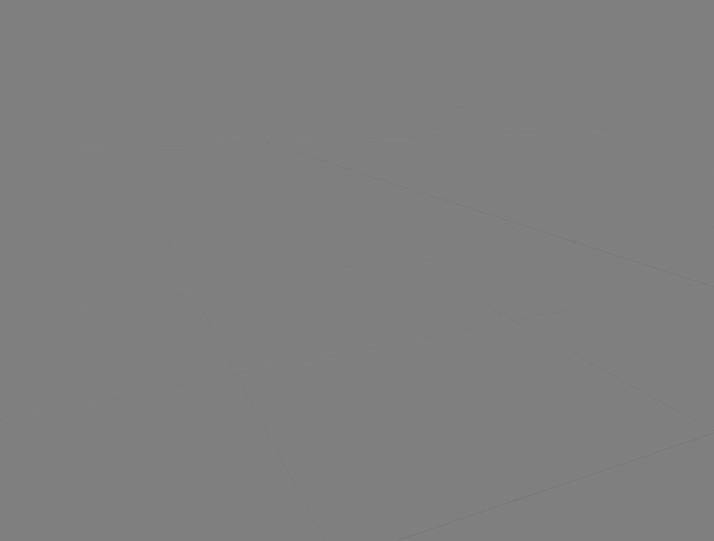

Texture Libraries#
You can set up texture libraries in the addon preferences. This allows you to easily load textures and texture masks onto your brushes. Click HERE to learn how to add libraries.
Unlike material libraries, texture libraries do not need any setup for their previews. This is possible because the previews will be automatically generated from the texture itself.
